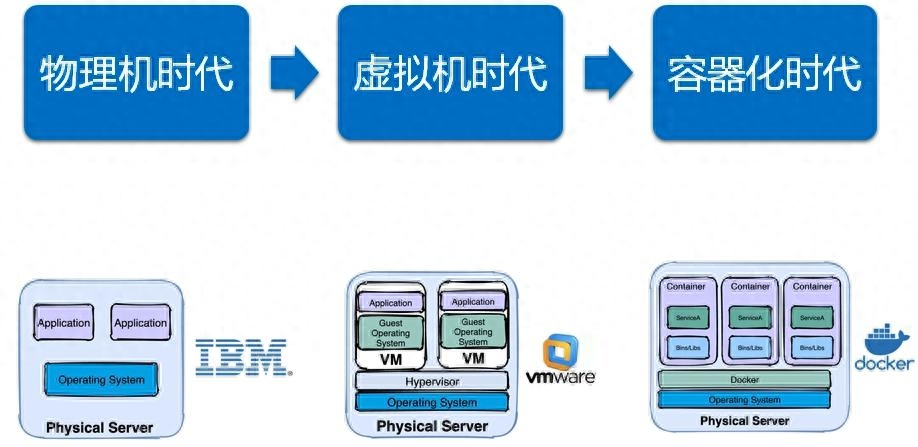

https://www.yuque.com/taijuanlebaai/fh01mx/bpn59snshbmekp2m?singleDoc#
部署方案

启动与验证
#查看Docker版本
docker -v
# 启动Docker
systemctl start docker
#列出运行在本地Docker主机上的所有镜像
docker images
# 停止Docker
systemctl stop docker
# 重启
systemctl restart docker
# 设置开机自启
systemctl enable docker
# 执行docker ps命令，如果不报错，说明安装启动成功
docker ps